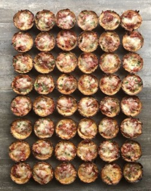

Pepperoni Pizza Bites

Description
Pepperoni Pizza Bites is a macro-friendly, gluten free that is
freezable for you to have available to you whenver you
need a quick snack. Super convenience for after gym session.
Ingredients
- 1.5 cup (180g) oat flour
- 6 tbsp (90g) liquid egg whites
- 1.5 cup (330g) plain non fat Greek yogurt
- 2 tsp (8g) baking powder
- 1 tsp (4g) onion powder
- 1 tsp (4g) garlic powder
- 0.5 tsp (3g) salt
- 1 cup (240 g) marinara sauce
- 0.75 tbsp (84g) shredded mozzarella cheese
- 15 slices (30g) pepperoni